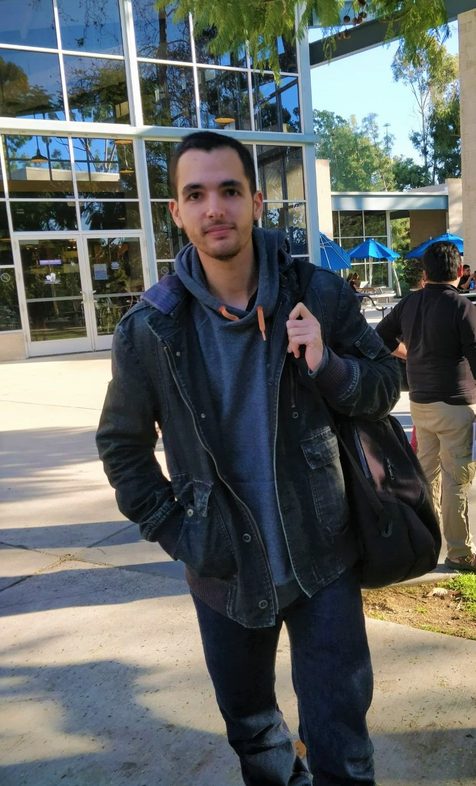

Nil Mamano

I received my PhD in Computer Science from UCI, as part of the Theory group. I was advised by Professor David Eppstein and Professor Michael Goodrich.
I have a Bachelor Degree in CS from UPC. I conducted my senior thesis at UCI under the guidance of Professor Wayne Hayes.
Contact and links
E-mail: nmamano (at) uci.edu
Research
Research interests:
My dissertation, “New Applications of the Nearest-neighbor Chain Algorithm”
studies how we can "relax" the selection rule of a greedy algorithm and still obtain the same solution. We pair this with an algorithmic technique, nearest-neighbor chains, based on which we give new alternative algorithms to greedy algorithms for many classic problems.
Publications
Preprints
Conference publications
- N. Mamano, A. Efrat, D. Eppstein, D. Frishberg, M. Goodrich, S. Kobourov, P. Matias, V. Polishchuk, “Euclidean TSP, Motorcycle Graphs, and Other New Applications of Nearest-Neighbor Chains,” ISAAC'19
- G. Barequet, D. Eppstein, M.T. Goodrich, and N. Mamano, “Stable-Matching Voronoi Diagrams: Combinatorial Complexity and Algorithms,” ICALP'18
- D. Eppstein, M.T. Goodrich, and N. Mamano, “Reactive Proximity Data Structures for Graphs,” LATIN'18
- D. Eppstein, M.T. Goodrich, D. Korkmaz, and N. Mamano, “Defining Equitable Geographic Districts in Road Networks via Stable Matching,” short paper in SIGSPATIAL'17
- D. Eppstein, M.T. Goodrich, and N. Mamano, “Algorithms for Stable Matching and Clustering in a Grid,” IWCIA'17
- D. Eppstein, M.T. Goodrich, J. Lam, N. Mamano, M. Mitzenmacher, and M. Torres, “Models and algorithms for Graph Watermarking,” ISC'16
Journal publications
- G. Barequet, D. Eppstein, M.T. Goodrich, and N. Mamano, “Stable-Matching Voronoi Diagrams: Combinatorial Complexity and Algorithms,” Journal of Computational Geometry, 2019
- W. Hayes and N. Mamano, “SANA NetGO: a combinatorial approach to using Gene Ontology (GO) terms to score network alignments,” Bioinformatics: Oxford Journals, 2018
- N. Mamano and W. Hayes, “SANA: Simulated Annealing far outperforms many other search algorithms for biological network alignment,” Bioinformatics: Oxford Journals, 2017
Projects
- I contributed to the RACSO online Judge, a teaching tool for the subject «Theory of Computation». It contains a collection of automatically-judged exercises asking to define recognizers / generators of formal languages (regular or context-free), as well as exercises asking for reductions between problems (undecidable or NP-complete).
- SANA: a tool for aligning biological networks.
- A new solution to the knight's tour problem.
- Some other projects on my Github.
Miscellaneous
Here is a collection of songs I've written, and a demo of the song I wrote for my sister's wedding!